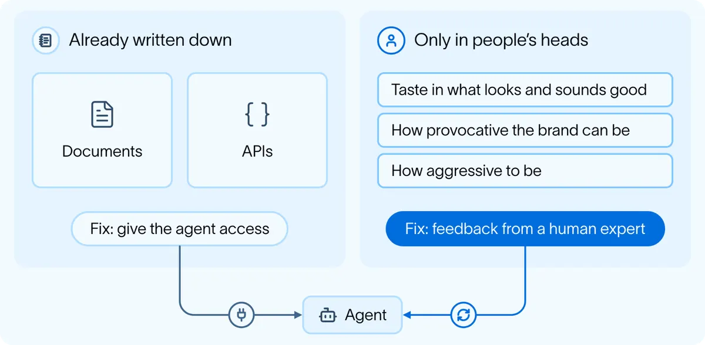
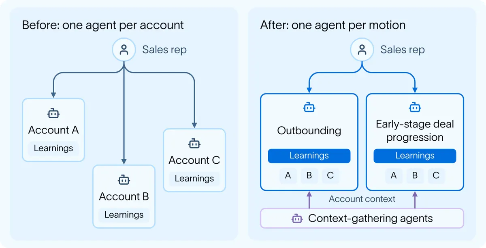

目標工程：把代理切成人類好回饋的形狀
導讀原文：Goal Engineering（LangChain 官方部落格，方法論文章；以 Actively AI 的銷售代理改版為例，談代理範圍該怎麼切）
代理的成敗常不在模型，而在工作被切成什麼單位：切到「人類一眼能審、一句話能糾正」，回饋才進得去，長期目標才跑得完。
目標開放之後，範圍設計變成主要成本
原文把代理的演進分成三步：文字生成、工具呼叫與決策、執行完整任務；下一步是接手開放式目標，自己判斷怎麼推進到完成。
目標一旦開放，範圍怎麼切就是主要成本：方向指錯，換來的是大量白燒的 token。原文以 Hone 的上線為例，說這種形態已經開始出現。

所以「容易給回饋」不是介面的加分項，而是範圍設計的第一約束。原文說瓶頸常出在代理「從回饋中學習」，因此要優化回饋收集的容易度與品質。
Actively AI：從一客戶一代理，改成一動作一代理
初版是每個潛在客戶配一個代理，目標是推進該客戶，代理產出動作、由業務核准。直覺上很合理：客戶脈絡最重要，代理就繞著客戶轉。
上線後才發現另一種關鍵上下文是「怎麼把這份工作做好」——怎麼陌生開發、怎麼回覆、怎麼盤算交易、要多積極、怎麼在大組織裡找人。
這種知識跨客戶可複用，卻散在各個代理裡；業務還得代理之間來回切換，學到的東西也難移轉。
原文說得更具體：只推進一個客戶時，任何時點能審的東西只有幾件，業務於是一直在代理之間切換，審閱體驗也差。

第二版改以「動作（motion）」為單位：一個 motion 是一疊同類任務，業務能一次審完，某筆任務學到的偏好也適用整批。
帳號脈絡沒有消失，只是多已可文件化，改由背景代理先蒐集，motion 需要時再取用；這批動作代理以 Deep Agents 打造。
可照抄的設計順序
把原文的論述收斂成五步：先定目標與可優化的指標，再切範圍。以下順序為編輯整理，原文並未主張必須照此順序執行。
- 01定義目標與指標原文：Hone 的代理有明確要優化的指標
- 02切成「一疊同類任務」讓同一句回饋能重複套用到整批工作
- 03做順手的審核介面降低每次回饋的成本，換來質與量
- 04由專家補上腦中的上下文文件與 API 給權限，偏好與尺度靠回饋
- 05代理在範圍內自行推進人只看需要判斷的地方，其餘交給代理
本站整理自原文論述，非原文流程圖；原文未主張五步必須依此順序，也未給各步的成本估計。
原文的兩個實務提醒：motion 的邊界要讓同類回饋可複用，否則審完一次就浪費；審核介面值得投資，因為它直接決定回饋的品質與數量。
原文也提醒，人審代理成果很花時間，但那正是教它認識你領域的方式；關鍵是把只存在腦中的知識，萃取成容易交給代理的形式。
（編輯觀點：切動作的前提是回饋能跨同類任務複用；若每個案子都獨一無二，切動作只會多一層協調成本。）
原文收尾押了一句：提示工程與上下文工程會消失，目標工程會留下。
帶走三件事
先問誰來審、多好審。回饋進不去，代理再強也學不到你的品味。
能寫成文件的，別留給人回饋。把專家的時間花在無法文件化的判斷上。
把代理切成一疊同類任務。單次回饋才能複利，跨客戶的學習才會累積。
導讀為本站編輯內容（AI 摘解自原文與館藏重點，非官方文件）；引述數據出自原文，前兩張圖為原文圖（LangChain），圖解 C 為編輯整理。內容經對照原文的獨立事實審查後發布。